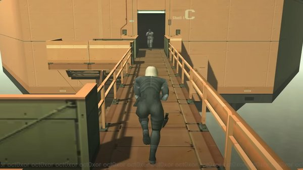

Our New Releases
Stray Garfield Mod
Play the game as Garfield like an actual cat with this new costume mod!
Elden Ring Full Co-op Mode Mod
Play the full game with a total of 4 players including any mode outside of boss fights
Metal Gear Solid 2: Substance Third-Person Camera Mod

Play the levels in a completley new point of view
Mario Kart 8 Deluxe CTGP Mod
This new mod inserts a ton of variety of custom tracks into the game, from race tracks that orignated from previous games that originally did not make the final cut to actual new custom made tracks. Increase your track selection with this mod and race on new roads!
Back to main page